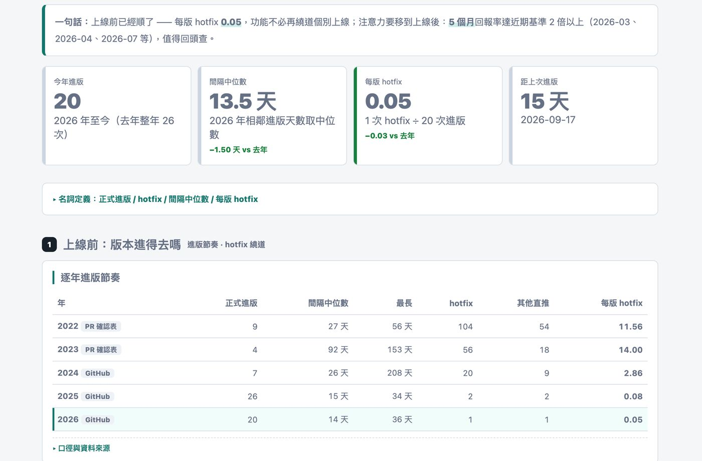
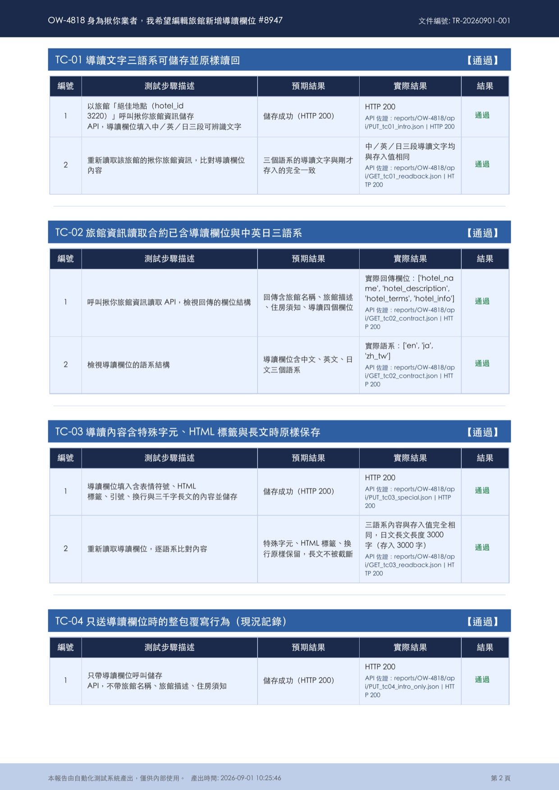
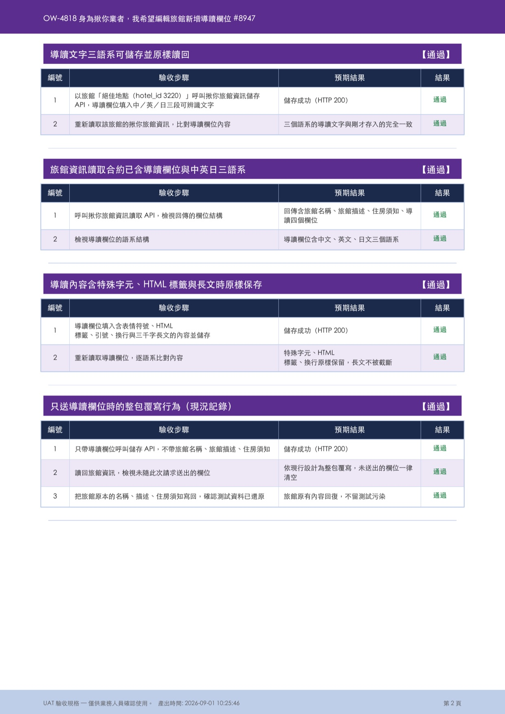
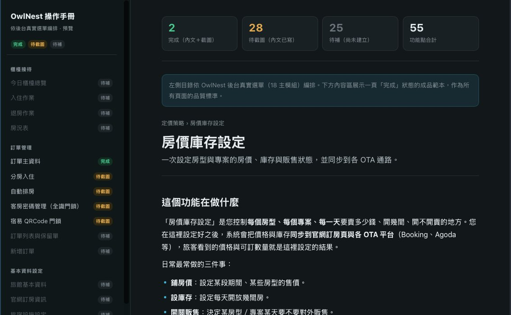
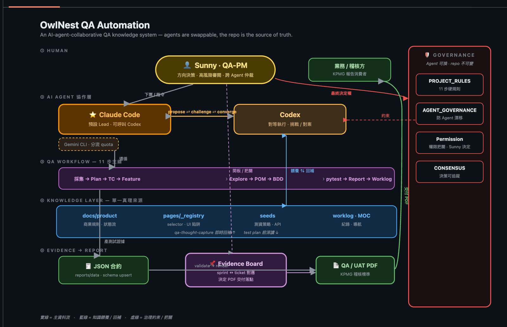
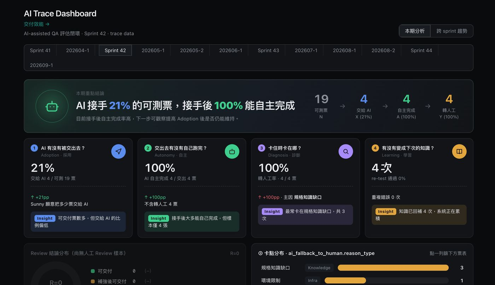
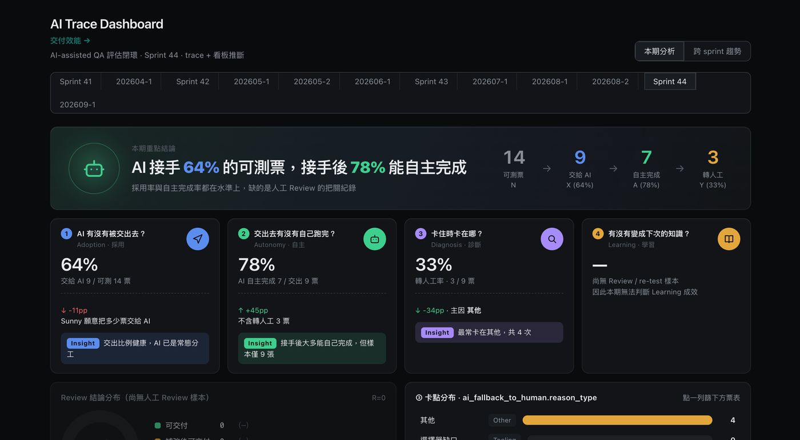

上線量從每年 378 張增加到 860 張，上線後緊急修補卻從每年上百次降到個位數。
02建立 E2E 自動化測試框架，含測資管理、規則檢查與 QA / UAT 雙版報告。
03從零建立產品規格與操作手冊，依後台 18 個主模組逐一整理。
04AI agent 協作的測試系統上線，可測票有六成以上交給 AI 執行。
衡量交付品質看兩件事：交付數量應該增加，hotfix 應該減少。兩個指標同時往好的方向走，代表問題在上線前就被攔下，而不是靠少上線來換穩定。
名詞說明：正式進版是照排程、經過完整測試的版本發布。hotfix 是正式進版之外、為了修問題或趕功能而緊急上線的修補。hotfix 越多，代表越多東西沒在正式流程裡被驗證。
2026 年為 1–9 月累計（2025 年同期 630 張）。
算法：當年 hotfix 次數 ÷ 正式進版次數。
| 年 | 正式進版 | 間隔中位數 | 最長間隔 | hotfix | 其他直推 | 每版 hotfix |
|---|---|---|---|---|---|---|
| 2022PR 確認表 | 9 | 27 天 | 56 天 | 104 | 54 | 11.56 |
| 2023PR 確認表 | 4 | 92 天 | 153 天 | 56 | 18 | 14.00 |
| 2024GitHub | 7 | 26 天 | 208 天 | 20 | 9 | 2.86 |
| 2025GitHub | 26 | 15 天 | 34 天 | 2 | 2 | 0.08 |
| 2026GitHub | 20 | 14 天 | 36 天 | 1 | 1 | 0.05 |
2022–2023 資料來自 PR 確認表，2024 起來自 GitHub 進版紀錄。

自動化測試讓每次進版前的回歸檢查可以重複執行、結果一致，也是後來能導入 AI 的基礎：AI 要能執行測試，前提是測試已經寫成程式和規則。
用 POM（Page Object Model）把畫面操作和測試邏輯分開，selector 集中在一份 registry。畫面改版時只要改一處，不用每支測試都改。
seed 管理工具會自動找可用日期、計算房量並建立測試訂單，測試不會因為資料被別人用掉而失敗。
測試案例用 Gherkin 情境寫成，業務和工程師都看得懂，可以直接對照規格討論。
同一次測試產出兩份報告：QA 版給工程端看細節，UAT 版給業務驗收，以稽核標準留存證據。
寫了檢查 hook，自動擋下寫死 selector、在頁面物件裡寫判斷等不符規範的寫法，品質不靠人工 code review 把關。
my-sync 工具組：Jira 與 Redmine 雙向同步、Release Note 產生器、Jira 狀態同步到業務 Google Sheet、QA 稽核工具，減少手動搬資料。
同一組測試結果產出兩個版本。QA 版給工程端看，每一步都帶實際結果和 API 證據檔路徑，出問題時可以照路徑翻出原始回應；UAT 版給業務驗收用，只留驗收步驟和預期結果，連 TC 編號都拿掉，不讓內部術語干擾判讀。


Owlnest 原本沒有產品規格文件，功能該怎麼運作多半只有少數人知道。我從零建立兩層知識：給工程與 AI 讀的產品規格，以及給旅館業者看的操作手冊。同一份知識讓測試有依據、新人和客服有地方查，也讓 AI 不再卡在「不知道功能該怎麼運作」。
逐個模組回補規格，並且分清楚兩種內容：從系統實際行為觀察到的「現況」，和需要 PM 或 RD 具名確認的「真正規格」。每條規格都附上信心標記（✅ 📖 ⚠️ 🧠），標示可信程度，作為之後 AI 客服上線前的安全關卡。已在定價模組完成試跑。
依後台真實選單（18 個主模組）編排，每個功能頁說明它在做什麼、開始之前要準備什麼、操作步驟和常見風險。「房價庫存設定」已完成，作為所有頁面的品質範本。
30 個功能點已有內文，超過一半；剩下的工作主要是補截圖。

我建了一套由 AI agent 協作執行的 QA 系統，再用 AI Trace Dashboard 每個 sprint 追蹤它的表現，確認 AI 真的分擔了測試工作，而不是多一個要顧的工具。
核心原則是「agent 可以換，repo 才是真理來源」。規格、selector、測資策略和規則都寫在 repo 裡，Claude Code、Codex、Gemini 讀的是同一份知識，換工具或換模型都不用重教。

我擔任 QA-PM，負責方向決策、高風險項目審閱，以及兩個 agent 意見不同時的最終仲裁。
Claude Code 主導並可呼叫 Codex，兩者以「提案、挑戰、收斂」互相檢查，降低單一 AI 判斷錯誤的風險。Gemini CLI 用來分流額度。
採集 → Plan → TC → Feature → Explore → POM → BDD → pytest → Report → Worklog。AI 照固定步驟走，每一步都有產出可以檢查。
產品規格（商業規則、狀態流）、selector 與 UI 陷阱、測資策略與 API、工作紀錄。測試中發現的缺口會即時回補，下次 AI 就不會卡在同一個地方。
測試結果寫成 JSON 合約，呈現在 Evidence Board 上並對應 sprint 與 ticket，最後產出 QA / UAT PDF 報告交付給業務與稽核方。
專案硬規則、防 agent 漂移、權限由我決定、決策可追蹤。AI 能做什麼、不能做什麼都寫成規則，不靠口頭提醒。
判斷 AI 有沒有真的幫上忙，我看三件事。每個指標都有預期方向，偏離方向就回頭查原因。
AI 開始承擔實際測試量。
S42 只有 4 張，樣本太小。接手量變兩倍多後仍有 78%，作為之後比較的基準。
交給 AI 的票變多，需要我接手的次數反而下降。
Sprint 42 的卡點有四分之三是「規格知識缺口」：AI 不知道功能應該怎麼運作，只能交回人工判斷。所以重點放在補知識，而不是換更強的模型。我在看板上加了知識回補關卡，規格不清的票在寫測試案例之前就先補規格；同時用第 03 段的知識庫批次回補產品規格，讓 AI 有完整的規格可以讀。

